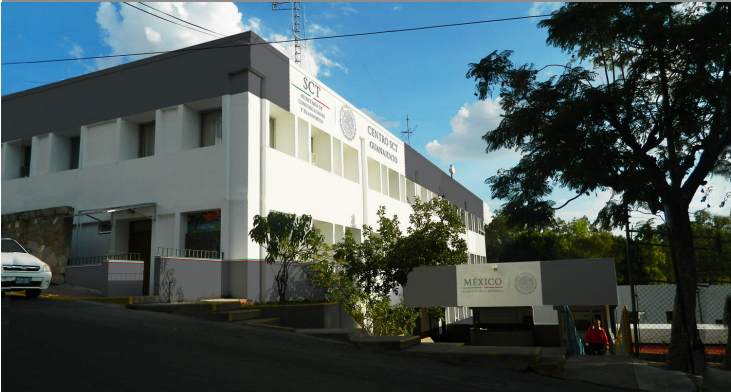

Módulo de información de la Secretaría
de Infraestructura, Comunicaciones y Transportes
La SICT es la encargada de diseñar, planear, ejecutar y coordinar las políticas públicas en de materia de medios de comunicación, esto incluye elaborar los programas para el desarrollo de bienes, servicios y pasajeros, no obstante en el caso de las vías marítimas, ríos y lagos, deberá coordinarse con la secretaría de marina; conducir las estrategias gubernamentales en las áreas de telecomunicación y radiofusión; operar Telecomm-Telégrafos, correos de México, Aeropuertos y Servicios Auxiliares, caminos y puentes federales; otorgar, vigilar renovar o retirar concesiones para la operación de medios de comunicación y transportes (aeropuertos, carreteras, vías férreas, etc); dirigir la construcción de infraestructura pública para comunicaciones y transportes, y regular las características profesionales del personal que opere las vías generales de comunicación y transporte.
